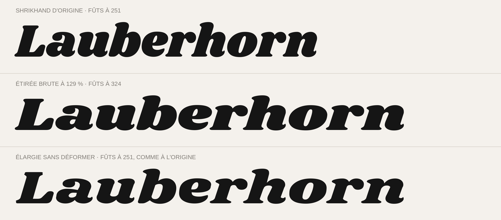

LaFleurStudio · 2026 · Sport années 70 · Police variable
Shrikhard
Shrikhand, élargie à 129 % sans être déformée. Un style droit, un italique, et un curseur Hauteur : on l'étire vers le haut, ou on l'écrase jusqu'à ce qu'il ne reste qu'un trait.
La descente
Le curseur Hauteur va de +20 à −100. Ses arrêts portent les noms de la piste du Lauberhorn, à Wengen : on part du Start, on finit au Ziel, la ligne d'arrivée. Entre eux, toutes les valeurs existent.
Testeur
Clique et écris. Glisse les curseurs.
De 0 à −40, les lettres s'aplatissent et leurs traits horizontaux s'affinent un peu pour que les blancs restent ouverts. De −40 à −100, elles s'écrasent et s'élargissent jusqu'à se toucher : à −100, il ne reste qu'un trait.
Caractères
Majuscules, minuscules, chiffres, accents (Europe centrale comprise), ponctuation, symboles. Les ligatures fi, fl, ff, ffi et ffl se font toutes seules.
Comment on l'a faite
Shrikhard part de Shrikhand, de Jonny Pinhorn. On l'a transformée avec des scripts Python.
On a pris Shrikhand
Shrikhand, de Jonny Pinhorn : une display très grasse, penchée de 14°, faite pour le gujarati et le latin. On n'a gardé que le latin.
Élargir à 129 % sans déformer
Étirer une lettre épaissit ses traits verticaux et laisse les horizontaux fins : le contraste change, la lettre devient molle. Le fût du n passerait de 251 à 324 unités.
Alors on redresse la lettre, on l'étire, et on rend à chaque trait son épaisseur en faisant glisser ses points. Les bouts arrondis, les boutons et les pointes restent comme ils sont.

Un style droit, un italique
Shrikhand n'existe qu'en italique. On l'a redressée de 14°, autour de la mi-hauteur des minuscules, pour en faire un style droit. L'italique, c'est le même dessin, repenché de 14°.
Le curseur Hauteur
Vers le haut, les lettres s'étirent et gardent leurs traits. Vers le bas, elles s'aplatissent. Si les traits horizontaux gardaient toute leur épaisseur, le a, le e et le R se boucheraient : on les laisse s'affiner un peu.
Au bout, à −100, chaque lettre n'est plus qu'un trait de l'épaisseur du _, qui remplit toute sa chasse. Les mots deviennent des lignes, les espaces restent.
Les petites réparations
Dans Shrikhand, le guillemet double bas „ n'avait qu'une virgule, et le simple ‚ laissait derrière lui le blanc d'un tiret. Maintenant, „ a ses deux virgules, et ‚ la chasse d'une virgule.
Le caron de ď ľ ť Ľ est une pièce à part, et les signes mathématiques ont tous la même chasse.
Télécharger
Libre et gratuite, même en commercial. Garde la licence avec la police.
Installation sur un site web
@font-face { font-family: "Shrikhard";
src: url("Shrikhard[HAUT].woff2") format("woff2"); }
@font-face { font-family: "Shrikhard Italic";
src: url("Shrikhard-Italic[HAUT].woff2") format("woff2"); }
h1 { font-family: "Shrikhard";
/* HAUT : hauteur de −100 (un trait) à 20 */
font-variation-settings: "HAUT" -40; }